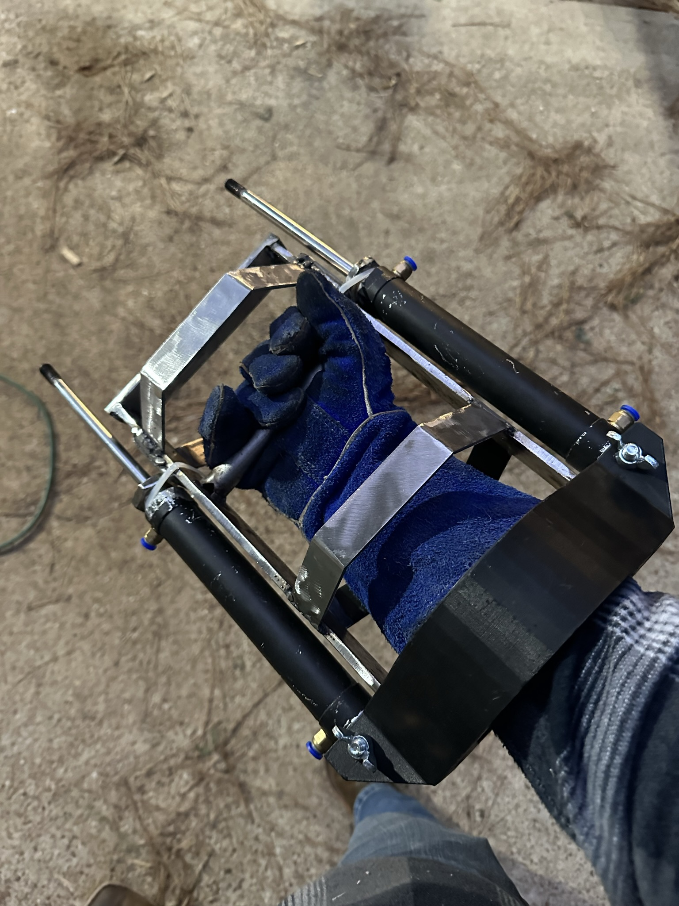

Finished Power Fist worn on the arm.
Click any thumbnail to view it larger.
Project Overview
From concept to a working wearable prototype.
I built the Power Fist as a real-life interpretation of the device from Fallout. The mechanism used two pneumatic cylinders mounted to a welded frame, with 3D-printed components forming part of the wearable structure.
Testing exposed structural weaknesses, including repeated weld failures. I used those failures to drive later revisions, including adding springs to reduce the shock the mechanism placed on itself.
Engineering Story
- Started with a CAD concept for the wearable frame.
- Fabricated and welded the structural assembly.
- Integrated two pneumatic cylinders, tubing, valves, and electrical connections.
- Documented structural failures during testing and used them to guide redesign.
- Added springs in a later revision to reduce impact loading on the mechanism.
- Continued refining the frame before finishing and painting a later version.
- Developed a portable air-supply setup so the pneumatic system could be tested away from a fixed shop compressor.
Testing